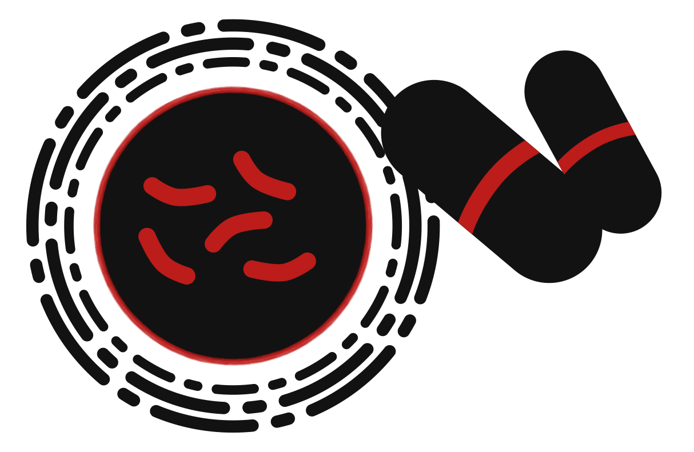
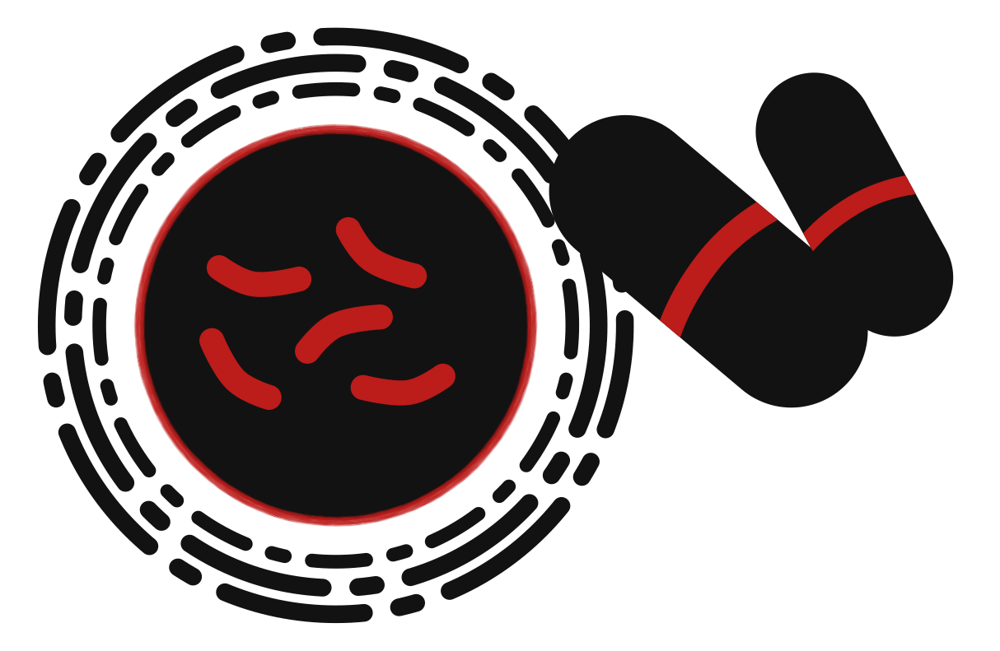

These illegal actions will cause many to die and accelerate the spread of drug-resistant tuberculosis, all to save less than 1% of the US's budget.
In 1961, Congress created the US Agency for International Development (USAID).
Every year, it supports programs across the world that help end tuberculosis.
But now it is under threat.
UNDER THREAT
As Trump took office in January, his administration swiftly moved to dismantle USAID.
In his first week in office, he signed an executive order freezing foreign aid, including all USAID funding, for 90 days while the administration reviewed the funding. But experts questioned the legitimacy of this review.
Later that week, the Secretary of State issued a temporary waiver for life-saving treatment, which, according to experts, has only been sparingly granted.
As the weeks progressed, USAID’s website was taken down while thousands of employees were fired, including overseas workers who were providing care to millions of people around the world.
Finally, the administration has announced that it will permanently shutter 90% of USAID's contracts as workers get their last chance to retrieve their belongings after being fired.
THE SUPER BUG
 

Stopping TB treatment before it’s completed is known to cause drug-resistant TB, making treatment more difficult and expensive. When this happens on a large scale, the resistance can spread around the world, threatening people from the US to Nigeria. These cuts could also cause a “superbug” to develop that is resistant to all our current medications.
These cuts are estimated to result in a 28-32% increase in tuberculosis globally, which will set us back decades in the fight against TB. But we can still fight back.
TAKE ACTION
Recently, some contracts for USAID implementing partners have been restored in name only, without the funding they need to carry out their crucial work. This gesture, while far from enough, shows that the administration is responding to pressure. Calls, emails, and letters from constituents are emboldening members of Congress and the judiciary to stand up against the executive branch.
Countries other than the US have also cut foreign aid funding. Many of the same points laid out above still apply: cutting crucial foreign aid will cost lives. We have made templates to help you write to your elected officials about these cuts. If your country hasn't cut funding, you can ask your elected officials to fill the gap left by the US and other countries. You can find templates for that below too.